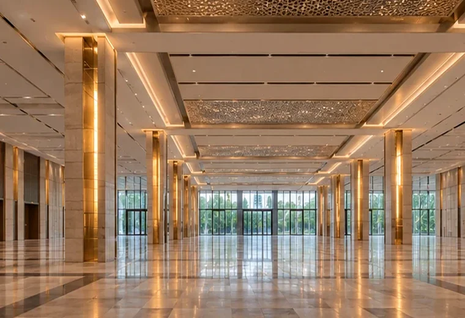

Konvensi & pertunjukan
Plenary Hall
Auditorium melingkar ikonik dengan area duduk di lantai utama dan balkon mezzanine 360°. Terhubung langsung dari Main Lobby.
- Teater
- 5.000
KOLEKSI ARSITEKTUR JCC SENAYAN
Pilih konfigurasi tata kursi, tentukan jumlah tamu, atau bandingkan dua ruang secara berdampingan sebelum meninjau denah lantai.
6 ruang pilihan
Filter jumlah peserta menampilkan ruang dengan kapasitas terpublikasi untuk konfigurasi terkait.
Belum ada ruang yang memenuhi filter ini. Coba konfigurasi lain atau kosongkan jumlah peserta.
Konvensi & pertunjukan
Auditorium melingkar ikonik dengan area duduk di lantai utama dan balkon mezzanine 360°. Terhubung langsung dari Main Lobby.
Jamuan & konferensi
Ballroom perjamuan berskala besar dengan chandelier kristal yang dapat dibagi menjadi tiga zona dengan partisi bergerak.
Konferensi & jamuan
Ruang fleksibel dengan partisi bergerak, bilik penerjemah simultan, dan perangkat pendukung konferensi tingkat tinggi.

Pameran & Expo
Hall pameran bebas kolom seluas 3.060 m² dengan akses langsung untuk truk logistik. Dapat dihubungkan ke Exhibition Hall B melalui koridor.
Pameran & Konvensi
Hall pameran terbesar (6.075 m²) dengan beban lantai 1.500 kg/m². Dapat digabungkan dengan Hall A menjadi area eksibisi 9.585 m².
Registrasi & Foyer VIP
Foyer serbaguna berlapis marmer untuk registrasi akbar, pembukaan pameran, dan resepsi koktail sebelum memasuki hall utama.
Untuk seluruh denah teknis dalam katalog ini, buka pusat denah & dokumen ↗.
Cocokkan kapasitas per konfigurasi secara berdampingan untuk menentukan ruang yang paling ideal.